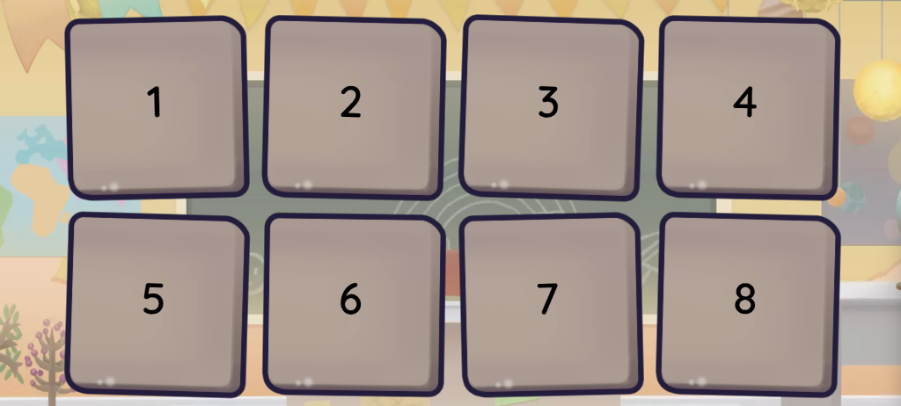
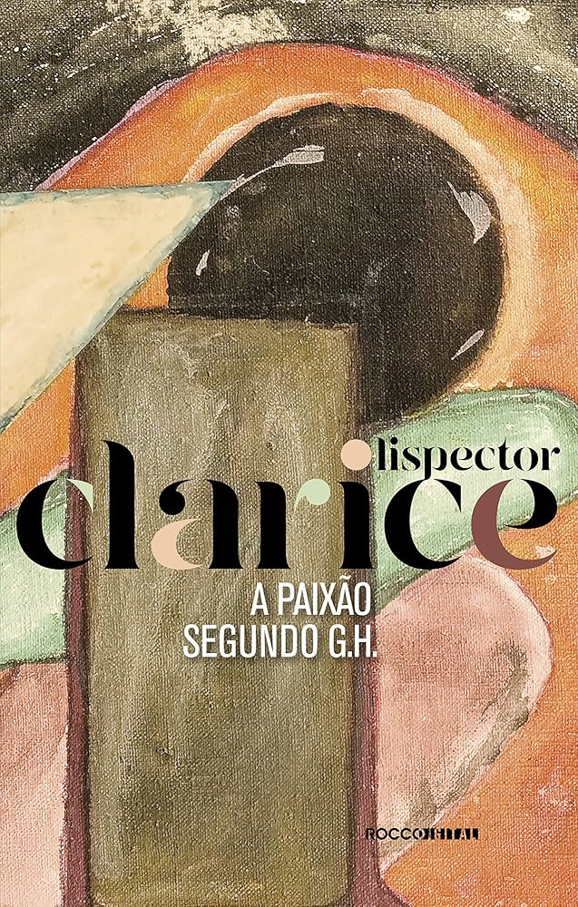

No trabalho em anexo, o nosso grupo ficou responsável pelo tema acerca do Romantismo 2ª geração e desenvolveu um jogo da memória no Wordwall, no qual é necessário ligar autores às suas respectivas obras. O conteúdo abordou características como pessimismo, subjetivismo e escapismo, além do contexto do segundo Segundo Reinado e das influências do Byronismo e da tuberculose. A proposta tornou a revisão mais interativa, criativa e colaborativa. .
Habilidades e Competências

AnexoAo abordar o tópico de Psicologia acerca do livro, meu grupo, juntamente a mim, analisou a personagem que protagoniza e seus possíveis colapsos para com a realidade. Com base em podcasts, discutimos se a vivência é patológica ou transformadora, concluindo que ela apresenta elementos de ambos, combinando ruptura e potencial de crescimento pessoal. .
Habilidades e Competências

Anexo